Click here to go back to the main page.
| Name: |
The Buzzer Callsigns: UZB76, MDZhB, ZhUOZ, ANVF, VZhTsKh, 217O, NZhTI, TOD3 |
|---|---|
| Frequencies | 4625 kHz |
| Status | Active |
| Voice | Male, Female |
| Mode | USB |
| Location | Kerro, Russia |
| Known counterpart stations | N/A |
| Description |
Controlled from Saint Petersburg (60th Communication Hub "Vulkan"); transmitted from near Saint Petersburg at Kerro. "The Buzzer", known among Russian listeners as "Жужжалка" (Zhuzhzhalka; English: Hummer), is a Russian military commandment network serving the Western Military District. It broadcasts around the clock on 4625 kHz. While no other traffic is being sent, the station emits its signature channel marker 'The Buzzer'. Archive page of voice messages at : https://priyom.org/military-stations/russia/the-buzzer. Priyom.org FAQ: https://priyom.org/military-stations/russia/the-buzzer/other-information/faq. |
| Media |
Archive Recordings1982 Marker (in AM): 1989 Marker: 2010 Marker + phone call: 2011 Marker Crossmodulation: 2012 Marker: 2010 Swan Lake: Images and VideosFront of the station: 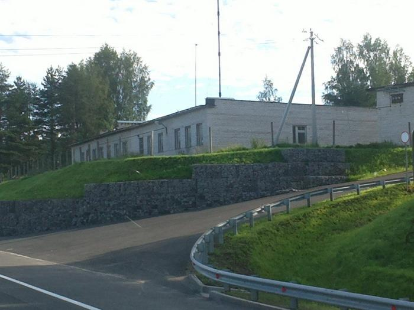 Antenna Array: 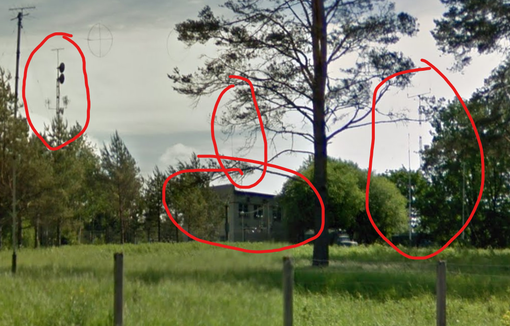 Antenna from front: 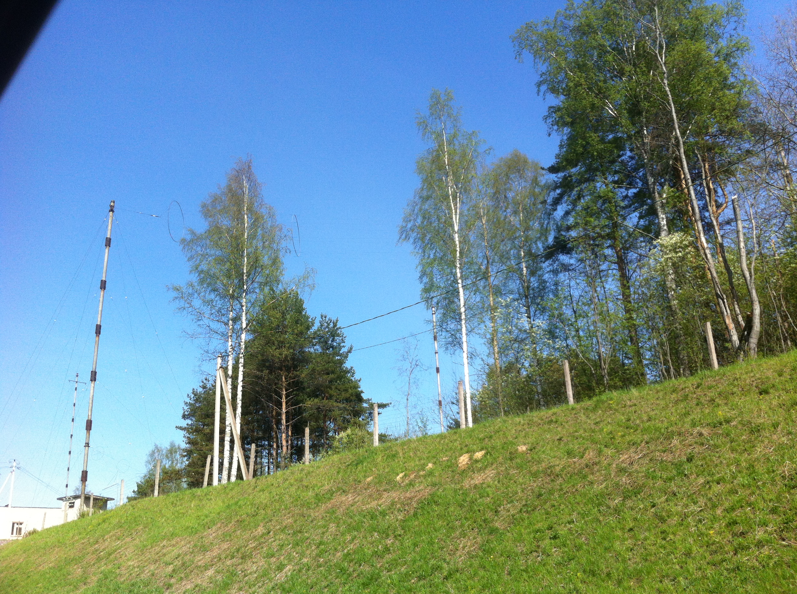 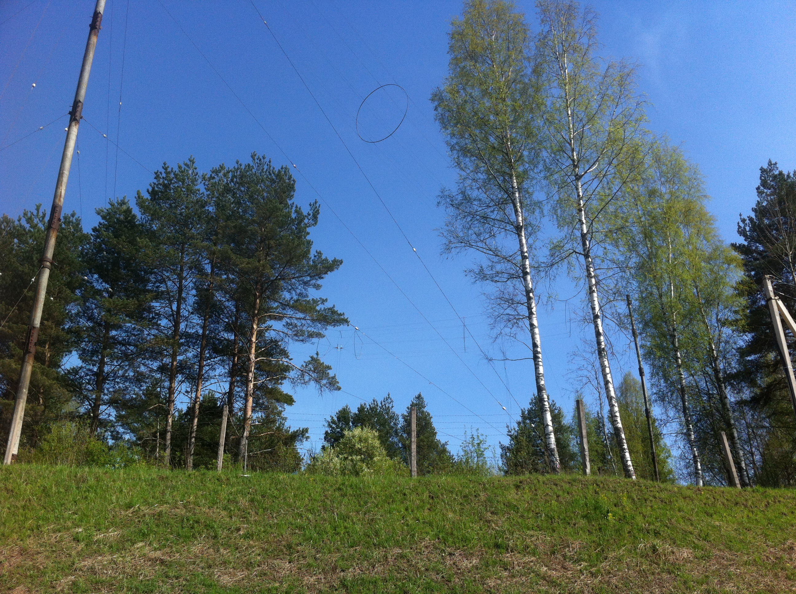 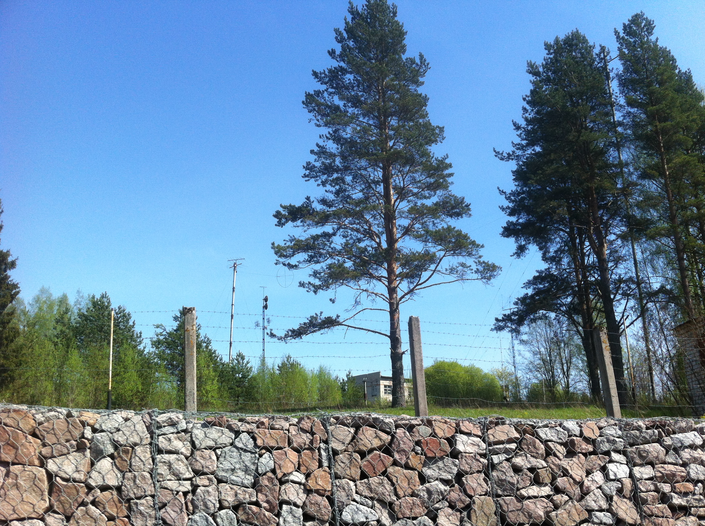 Station view from the sky: 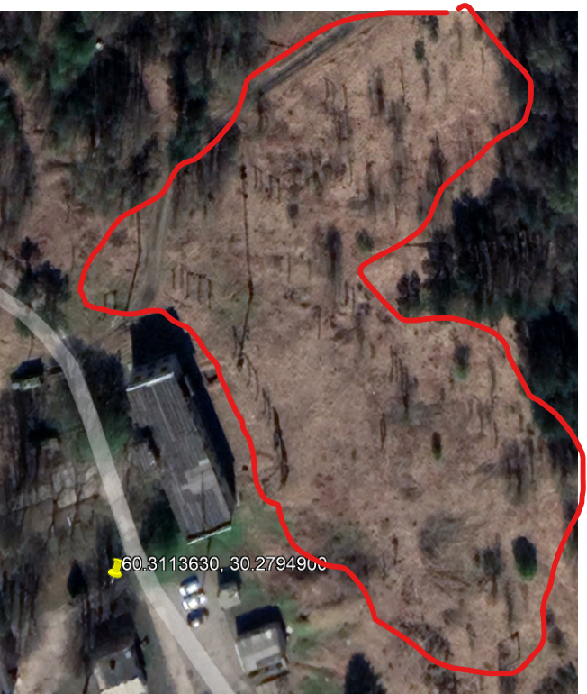 Front view of the station's Fence: 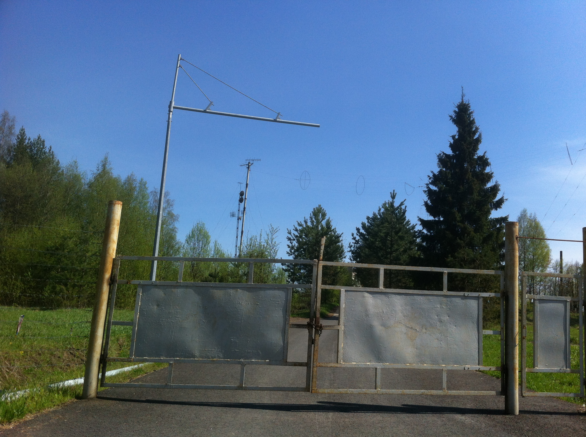 Roof antenna: 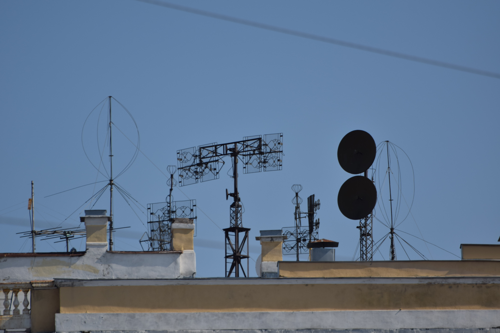 Video of someone at the station: Operators: 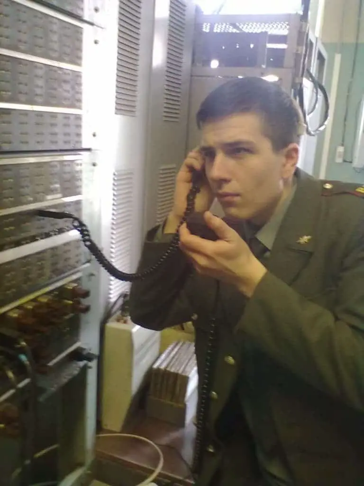 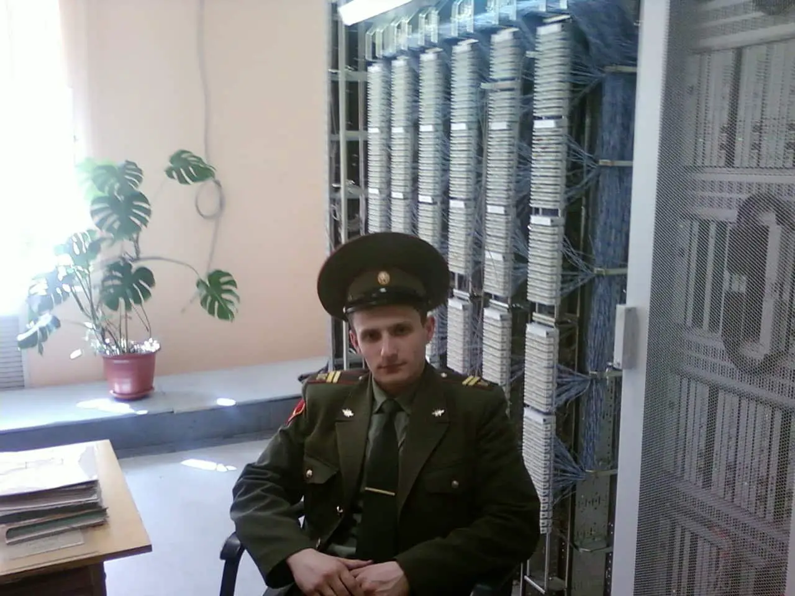 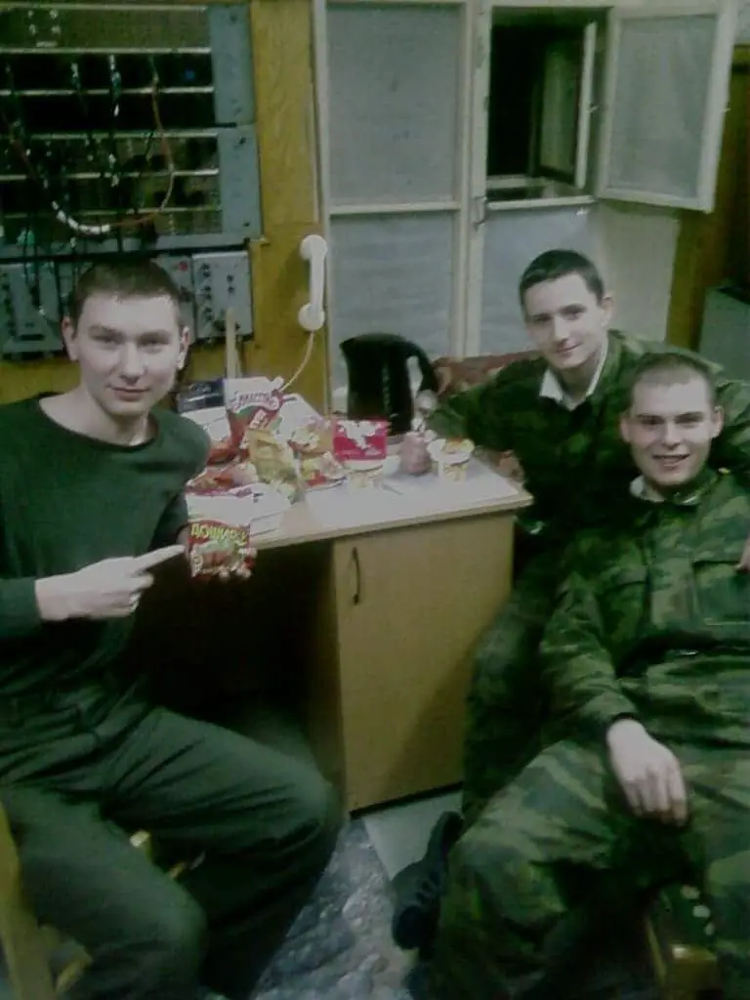 |